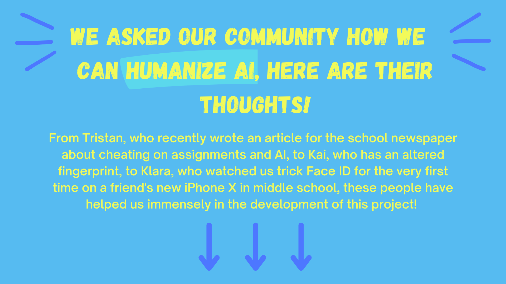
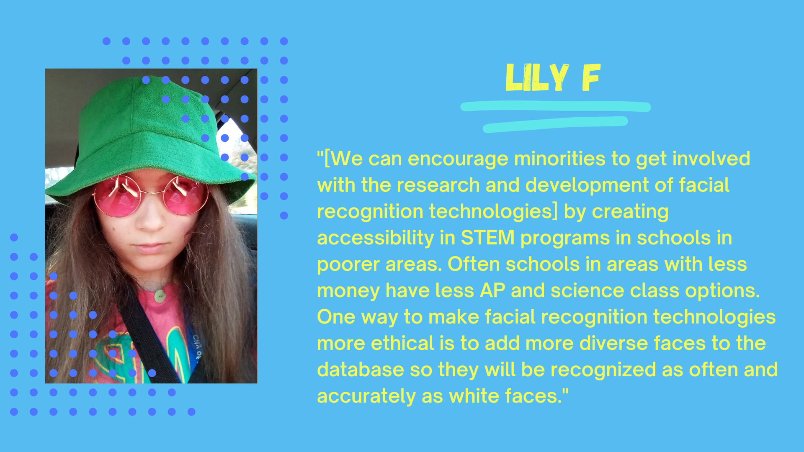
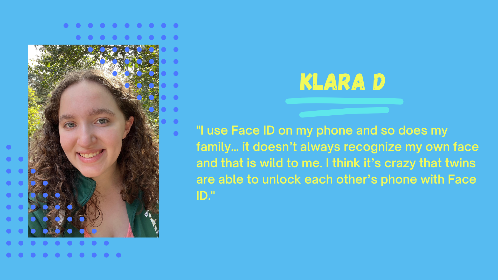
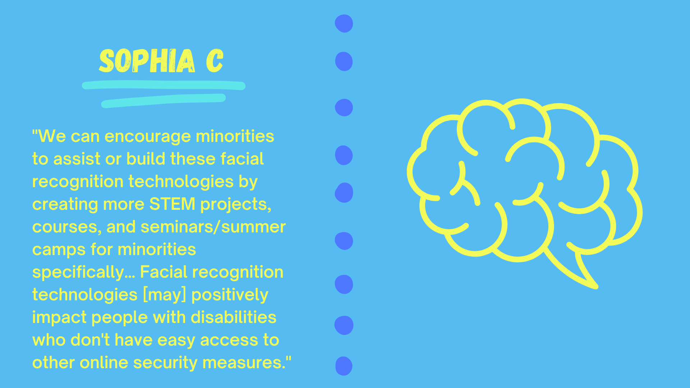

Facing Bias
How It Works
Biases in AI
Improving AI
Future Of AI
Our Story
Community
Solutions
Careers
References




![Tristan S: 'The best way to teach AI to be better at identifying diverse faces is to have diverse people working on this technology... AIs are trained mostly on white and/or male faces. If we introduced more women and people of color to the development, many of these issues would be minimized… What I would like to see is more transparency. Where exactly is our data going? What is it used for? I would also like to see laws created surrounding the use of this technology. Overall, AI and facial recognition is a very exciting tool, but as with all new things, we need to evaluate how it can and should be safely used.'](assets/tristanQuote.png)
![Kai W and Ninoa W: 'Me and my sibling both have issues with AI due to physical disabilities and facial similarities. For me, AI refuses to work with one of my fingerprints because I have a large scar and chemical burn…. it doesn't register as a fingerprint on my phone. [Ninoa] has congenital heart disease, so their heart doesn't have a normal heart beat. They are unable to use Nintendo workout games because the game will shut off and call 911 if your heart beat is too low or too high… it's unable to read their heart beat. Both of us are also able to unlock each other's phones with facial recognition, even though we don't look identical.'](assets/kaiQuote.png)
![Toa G: 'Since creators are biased, AI also is… [I’m not surprised facial recognition technologies can be inaccurate since] seeing as while I'm not even that much darker, soap dispensers often have a hard time recognizing me and I've known about how POC are underrepresented in tech.' Lucas D: 'The fact [that] the FBI's facial recognition technology [is] wrong about 14% of the time… is startling because we often see machines as neutral beings so it's startling to find out that it has unintended biases because of who's getting to use these technologies and who creates them.'](assets/toaAndLucasQuote.png)